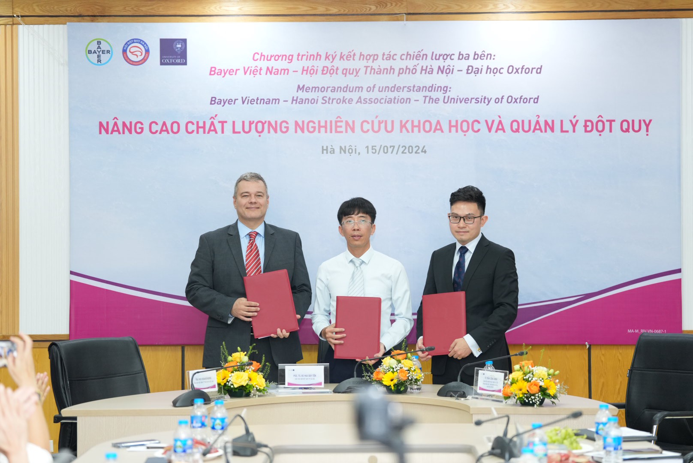
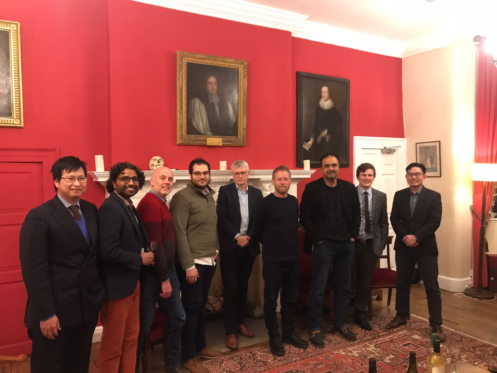
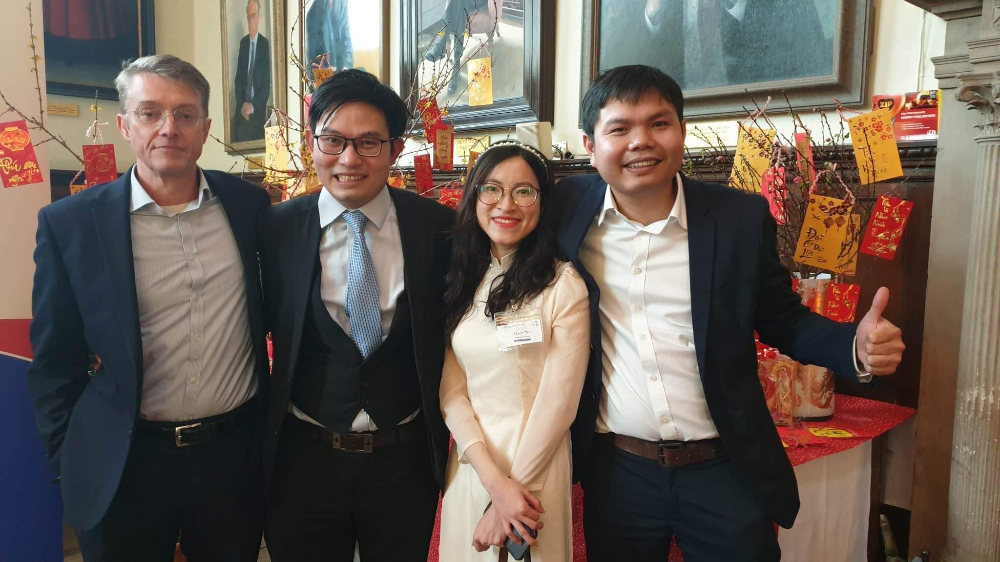
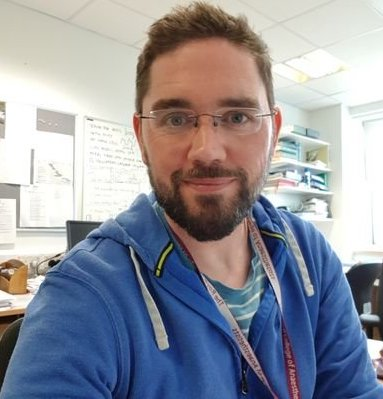
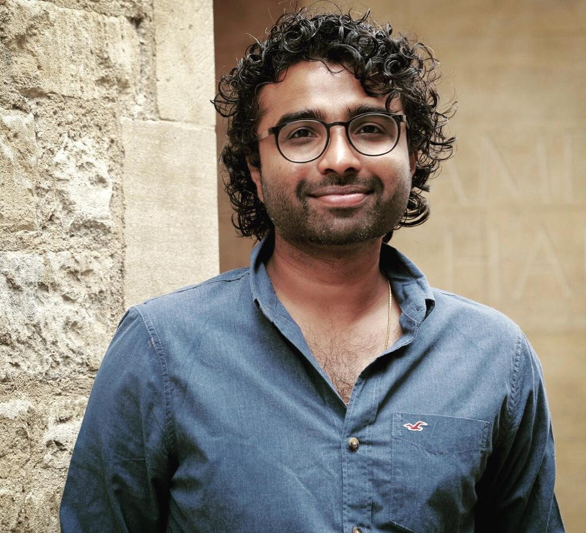
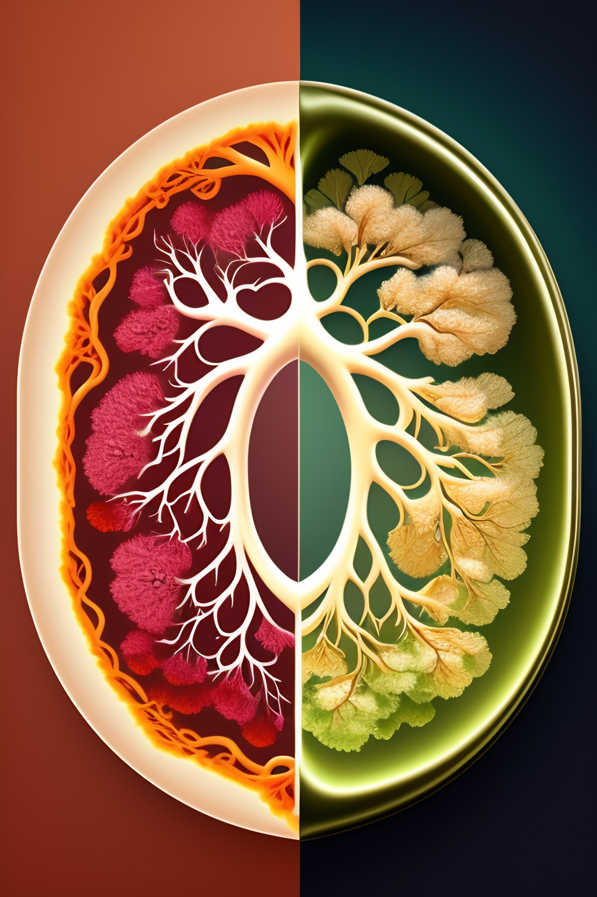
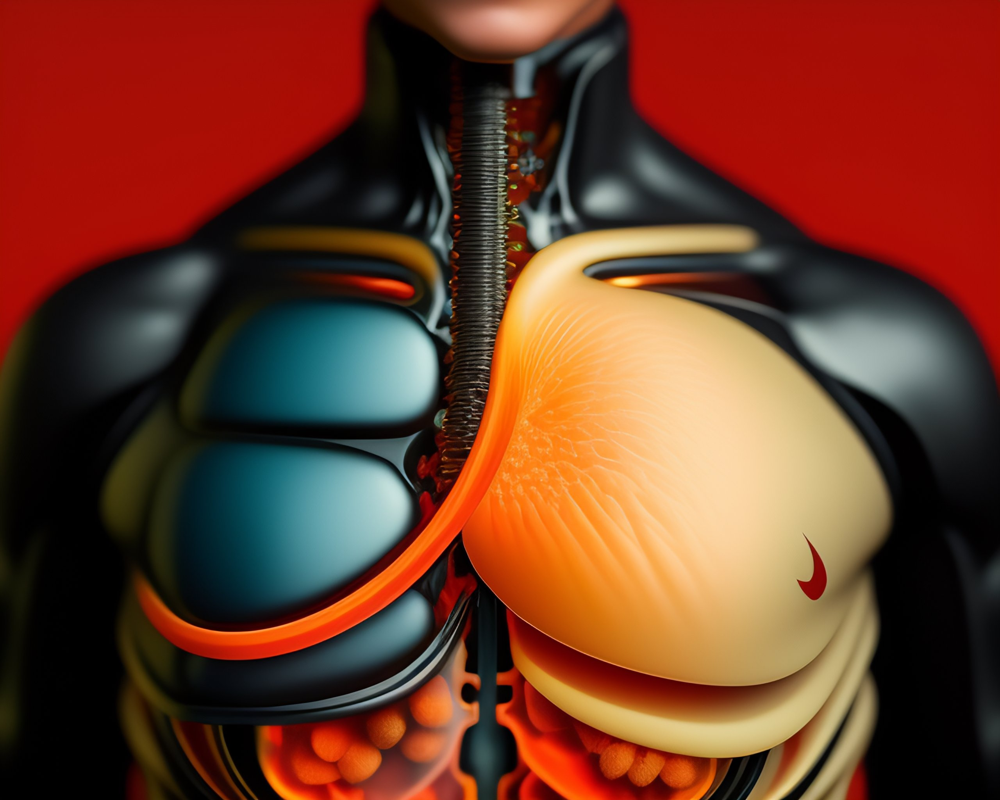
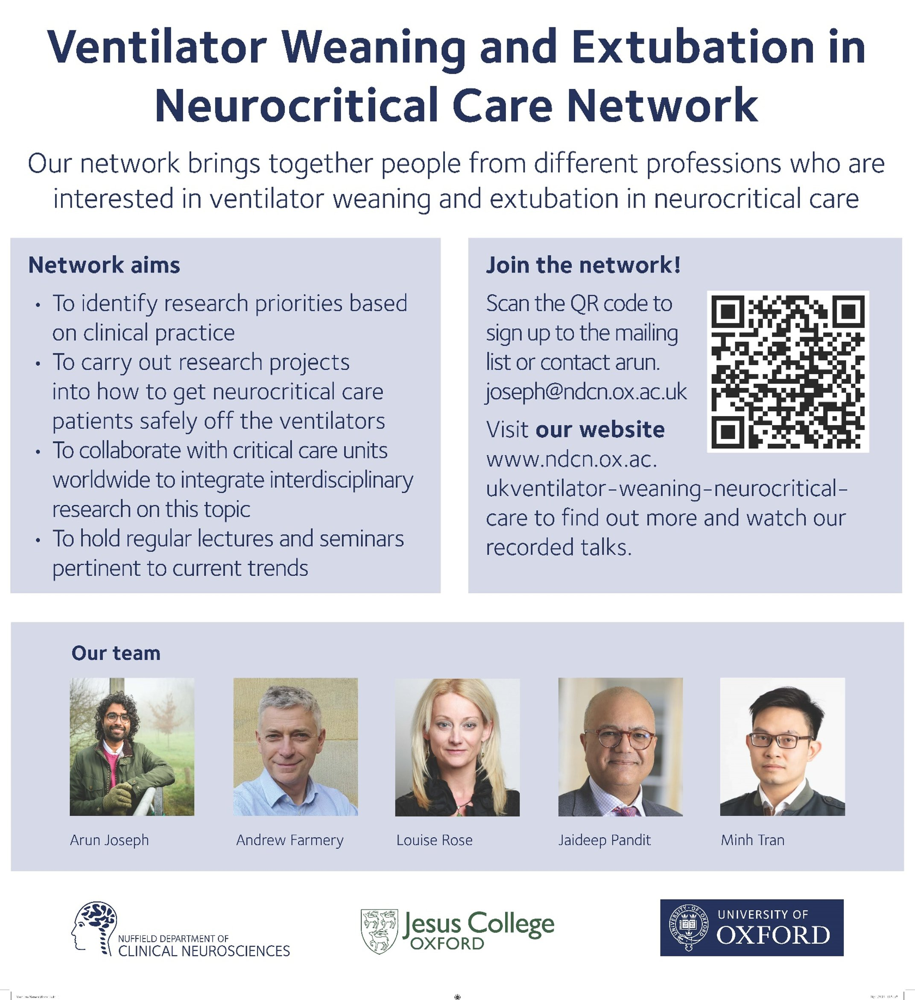
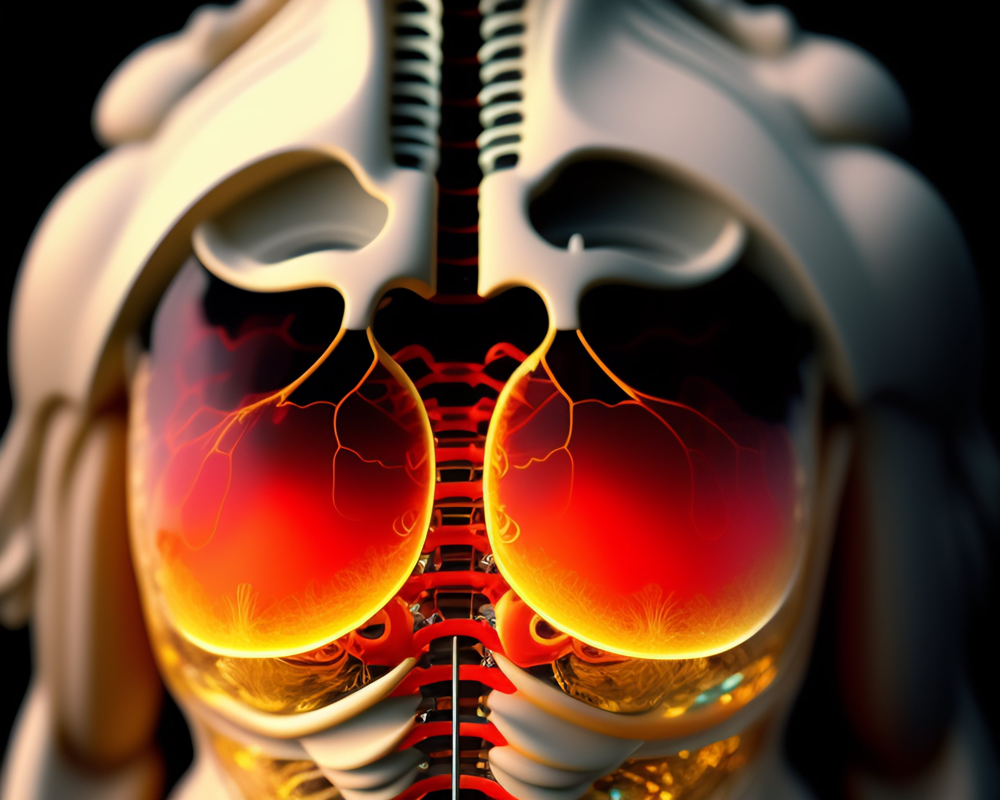

Oxford Academic Group · Nuffield Department of Clinical Neurosciences
Translating digital medicine, AI, and clinical engineering into rigorous and scalable solutions for cardiometabolic, respiratory, neurocognitive, and chronic care.
Our Mission
We develop digital solutions that improve prevention, monitoring, and treatment for chronic and noncommunicable diseases. Our work spans remote monitoring, explainable AI, translational diagnostics, and clinically meaningful digital biomarkers.
The group's ambition is to create tools that are rigorous enough for research, practical enough for care teams, and scalable for global health impact.
Since our early work in Oxford, with support from Professor Andrew Farmery, the group has grown into an interdisciplinary platform connecting clinicians, engineers, and global partners around noncommunicable disease innovation.
Research Focus
We develop digital tools to better identify risk, monitor chronic disease trajectories, and support earlier, more precise intervention in cardiometabolic care — bridging wearable data with clinical decision support.
Remote physiological monitoring for cardiovascular risk stratification
AI-driven metabolic phenotyping from continuous wearable signals
Digital biomarkers for early diabetes and hypertension detection
Clinician-in-the-loop decision support tools for chronic care
From bedside lung modelling to ventilator optimisation, we work to protect patients from iatrogenic harm in ICU settings and improve outcomes in chronic respiratory disease pathways.
Patient-specific lung modelling to guide ventilator titration
Ventilator weaning and extubation decision support in neurocritical care
Transparent AI for ICU clinical decision-making
Animal model validation of cardiorespiratory physiology during cardiac arrest
We investigate digital approaches to detecting and monitoring neurocognitive decline — from stroke prevention to brain health monitoring — in collaboration with clinical neurosciences at Oxford.
Stroke care pathway innovation with clinical and industry partners
Digital screening tools for neurocognitive risk and decline
Global collaboration on noncommunicable neurological disease burden
AI models for neuroimaging and clinical data integration
A cross-cutting theme across all our work: developing explainable, clinically grounded AI that earns trust from both clinicians and patients, and deriving meaningful digital biomarkers from physiological data.
Explainable AI for clinical risk prediction and stratification
Physiological signal processing and feature extraction
Digital biomarker validation pipelines from wearable and bedside data
Federated and privacy-preserving learning for clinical datasets
Capabilities
From concept to clinical validation — our group covers the full innovation pipeline for digital medicine.
Translating unmet clinical needs into clearly scoped innovation projects with rigorous feasibility assessment.
Rapid, user-centred prototyping of digital health tools with iterative feedback from clinicians and patients.
Controlled bench and animal model experiments to validate physiological models and device performance.
Structured validation pipelines — from system specification and design verification to full clinical validation.
High-quality academic output — peer-reviewed papers, regulatory documentation, and grant applications.
Rapid iteration through structured feedback loops with senior clinicians and end users at Oxford.
Competitive landscape analysis and market sizing for healthcare innovation in noncommunicable disease spaces.
Supporting ideas from research through to spinout — IP strategy, funding, and partnership development.
Impact
Selected collaborations, events, and milestones from the group's work at Oxford and internationally.



The Group
An interdisciplinary team of engineers, clinicians, and scientists united by a shared ambition for digital health innovation.
Group Lead & Founder
BEng (Hons), DPhil (Oxon)
Engineering Physics
MSc (Physics), BA Hons (Physics)

Clinical Lecturer in Anaesthetics
DPhil (Oxon), FRCA

Reading in Clinical Neuroscience
Jesus College, Oxford
Scholarly Output
Peer-reviewed research across digital medicine, respiratory physiology, AI, and noncommunicable disease innovation.
Full Publication List on Google ScholarNote: Publication titles above are representative. View the complete and current list on Google Scholar.
Working With Us
We welcome applications from motivated students and postdocs. Current projects span ICU technology, AI, and global health.

Supervisor: Minh Tran
A novel patient-specific approach to titrating ventilator settings using real-time lung model fitting from clinical monitoring data.
Read More →
Supervisor: Tu Tran
Developing explainable machine learning tools that provide clear reasoning for clinical recommendations in intensive care settings.
Read More →Supervisor: Douglas Crockett
Pre-clinical investigation of cardiorespiratory physiology to inform resuscitation protocols and post-cardiac arrest care.
Read More →
Supervisor: Arun Joseph
Clinical research within the international VENOUS network — developing evidence-based protocols for safe extubation in neurocritical patients.
Read More →News & Updates
Oxford NDCN · 2023
A landmark MOU was signed between the University of Oxford, the Hanoi Stroke Association, and Bayer Vietnam to advance stroke care innovation in Southeast Asia.
Read More
Research Update · 2024
A patient-specific digital model of the lung can help clinicians make better, more personalised ventilation decisions at the bedside — reducing lung injury risk.
Read MoreNDCN · Oxford · 2023
The VENOUS network, led by Arun Joseph (Oxford), brings together neurocritical care units globally to standardise ventilator weaning practices in brain-injured patients.
Read MoreGet In Touch
We welcome clinical collaborators, industry partners, and prospective students. Reach out to explore how we can work together.
Location
Level 6, West Wing, John Radcliffe Hospital, Oxford OX3 9DU, UK
minh.tran@ndcn.ox.ac.uk
Oxford Profile